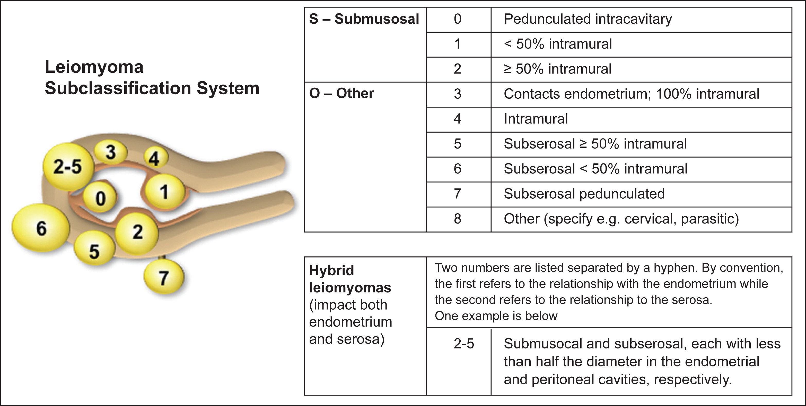

Uterine Leiomyomas
Background

Source: Munro M.G., Critchley H.O., Broder M.S., Fraser I.S. The FIGO Classification System (“PALM-COEIN”) for causes of abnormal uterine bleeding in non-gravid women in the reproductive years, including guidelines for clinical investigation. Int J Gynaecol Obstet. 2011; 113: 3-13
Describes relationship of leiomyoma to endometrial and serosal surfaces.1
- Bleeding symptoms (AUB-L)1
- Bulk symptoms:
- Pelvic pressure, frequency of urination, constipation.1
Treatment
- Oral gonadotropin-releasing hormone antagonists with hormonal add-back therapy:1
- Oriahnn:1
- Twice daily:3
- Elagolix 300 mg, estradiol 1 mg and norethindrone acetate 0.5 mg capsule in the morning.
- Elagolix 300 mg capsule in the evening.
- Approved for AUB-L for up to 24 months.3
- Use non-hormonal contraception during treatment and for one week after discontinuing.3
Elagolix (Orilissa)
- Twice daily:3
- Myfembree:1
- Once daily:4
- Relugolix 40 mg, 1 mg estradiol and 0.5 mg norethindrone acetate once daily
- Approved for AUB-L for up to 24 months.4
- May help bulk symptoms as well.1
- Use non-hormonal contraception during treatment and for one week after discontinuing.4
- Once daily:4
- Oriahnn:1
- 52-mg LNG-IUD levonorgestrel-releasing intrauterine devices.1
- Combined hormonal contraceptives, progestin-only pills and depot medroxyprogesterone acetate.1
- Tranexamic acid.1
- Gonadotropin-releasing hormone agonists (leuprolide acetate) with or without add-back
hormonal
therapy.1
- 3.75 mg IM monthly / 11.25 mg IM every 12 weeks.5
- Use non-hormonal contraception during treatment.5
- Common add-back regimen:
- Oral conjugated estrogen 0.625 mg and norethindrone acetate 2.5–5.0 mg daily.1
- Duration of use limits:
- Short term treatment to "bridge" to other treatments.1
- 6 months total without add-back therapy.1,5
- 12 months total with add-back therapy.1,5
- Possibly Myfembree (see above).1
- Uterine artery embolization.1
- Endometrial ablation1
- Myomectomy.1
- Hysterectomy.1
- Management of symptomatic uterine leiomyomas. ACOG Practice Bulletin No. 228. American College of Obstetricians and Gynecologists. Obstet Gynecol 2021;137:e100–15. 18,2020.
- Options for prevention and management of menstrual bleeding in adolescent patients undergoing cancer treatment. ACOG Committee Opinion No. 817. American College of Obstetricians and Gynecologists. Obstet Gynecol 2021;137:e7–15.
- https://www.rxabbvie.com/pdf/oriahnn_pi.pdf
- https://www.myovant.com/wp-content/uploads/2021/05/Approved-MYFEMBREE-PI-and-PPI_26May2021.pdf
- http://www.lupron.com/